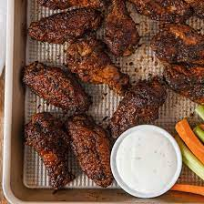

Jerk Wings

Description
These wings are full of spice and extremely addictive. Enjoy!
Ingredients
- 2-3 lbs chicken wings
- 4-5 tbsp BADIA jerk seasoning
- 2 tbsp complete seasoning
- 1 tbsp granulated garlic
- 1-2 tbsp dark brown sugar
- 1 tps ground ginger
- 1 tps ground allspice
- 2 tbsp browning
- 1/3 cup walkerswood(mild or hot) jerk seasoning
Steps
- Clean chicken and pat dry
- Combine dry ingredients and add to chicken
- Add wet ingredients
- Massage all seasonings until fully coated
- Marinate for at least 1-2 hrs(24 hrs for best results)
- Heat oven to 400 degrees
- Bake in a greased line baking sheet uncovered for 1-1.5 hrs or until desired crispness
Or air fry 100 degrees for 20-25 mins
Home Page